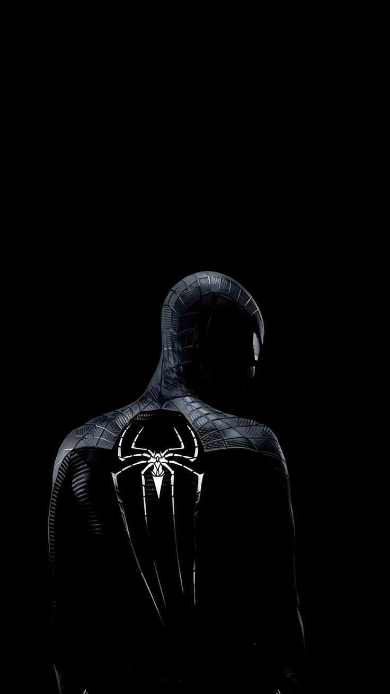
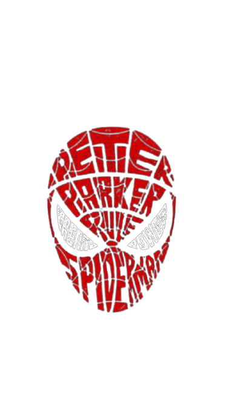

Black Suit Protocol
Mode senyap, fokus penuh.
Suit hitam ini dibuat untuk patroli malam: minim cahaya, cepat bergerak, dan tetap terlihat ikonik saat logo laba-laba menyala di gelap.


Spiderman WebBlack Suit Protocol
Suit hitam ini dibuat untuk patroli malam: minim cahaya, cepat bergerak, dan tetap terlihat ikonik saat logo laba-laba menyala di gelap.
